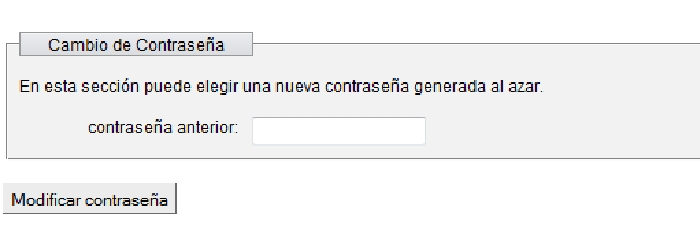
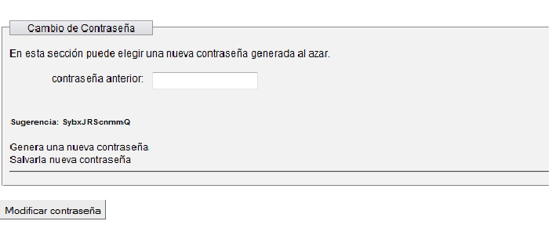
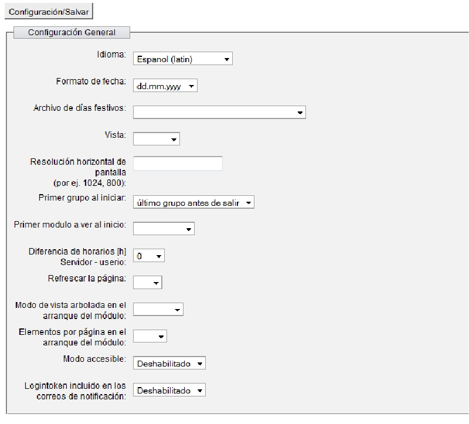
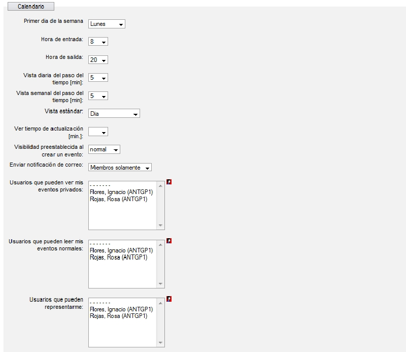

La primera sección de Configuaración es el de cambio de contraseña, en donde el primer requisito es escribir la contaseña antigua en la siguiente ventana.

Escribiremos la vieja contraseña le damos modificar, nos aparece la siguiente ventana.

La contraseña, nueva sera la mostrada en la sugerencia, si se otra sera generar otra, una vez escogida una se da en salvar la nueva contraseña. Nota no se puede cambiar la contraseña por una definida por el usuario, pero el administrador tiene el privilegio de poner la que el quiera.
Configuración General
En esta ventana puede personalizarse la vista y la forma del group, las opciones son las siguientes.

Una vez terminado de elegir las opciones le damos en guardar.
Personalización Calendario
Se usa la misma metodologia que en la configuración en general tambien damos en guardar hasta abajo, las demas opciones como no son usadas no se tomaran en cuenta.
